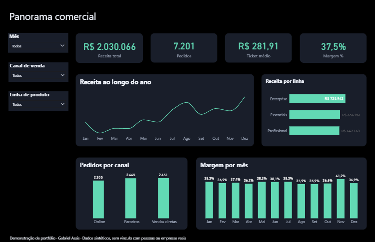
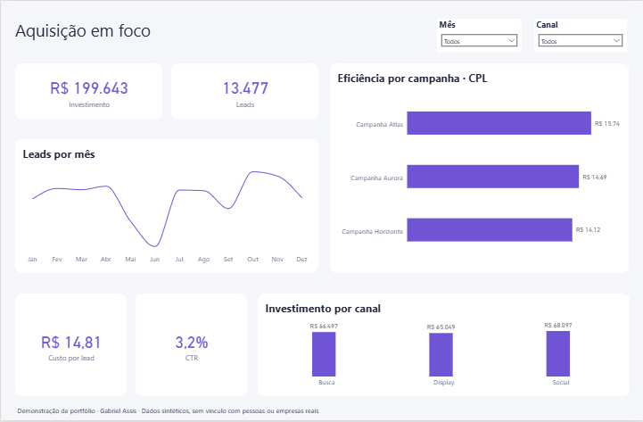
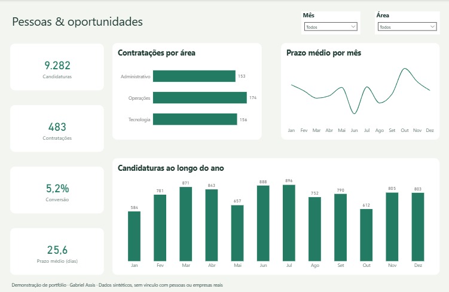

PROJETO DEMONSTRATIVO · BUSINESS INTELLIGENCE
Três dashboards em Power BI
Relatórios de resultados comerciais, aquisição de leads e recrutamento, cada um com layout próprio, medidas DAX e filtros.
Dados 100% fictícios. Projeto de estudo, separado da plataforma do trabalho. As imagens são capturas estáticas; os filtros funcionam nos arquivos para download.
COMERCIAL
Panorama comercial
Visão executiva de receita, pedidos e margem. Os filtros de mês, canal e linha de produto ficam ao lado dos gráficos.

Captura do relatório no Power BI · filtros em "Todos" · valores fictícios de 2026, arredondados na exibição.
Pergunta de negócio
Quais linhas e canais sustentam a receita, e como a margem evolui ao longo do ano?
Granularidade da base
Mês × linha de produto × canal de venda. São 108 registros sintéticos por relatório.
Decisões de análise e interface
- Indicadores principais na primeira linha para leitura executiva.
- Série temporal de receita para identificar oscilações mensais.
- Comparação entre linhas de produto e canais para ver de onde vem a receita.
Ticket médio = DIVIDE([Receita total], [Pedidos])MARKETING
Aquisição em foco
Relaciona investimento, leads e custo de aquisição. A maior parte do espaço vai para a comparação entre campanhas e a evolução mensal.

Captura do relatório no Power BI · filtros em "Todos" · valores fictícios de 2026, arredondados na exibição.
Pergunta de negócio
Como o investimento se distribui entre os canais e quais campanhas apresentam menor custo por lead?
Granularidade da base
Mês × campanha fictícia × canal. São 108 registros sintéticos por relatório.
Decisões de análise e interface
- Investimento e leads em destaque para dar contexto ao custo de aquisição.
- CPL por campanha. Um CPL menor não significa leads melhores.
- CTR calculado sobre o total de cliques e impressões, e não como média das taxas.
Custo por lead = DIVIDE([Investimento], [Leads])RECURSOS HUMANOS
Pessoas & oportunidades
Painel de recrutamento com os indicadores numa coluna lateral e a análise de volume e prazo no centro.

Captura do relatório no Power BI · filtros em "Todos" · valores fictícios de 2026, arredondados na exibição.
Pergunta de negócio
Como o volume de candidaturas se relaciona com contratações e prazo de preenchimento por área?
Granularidade da base
Mês × área fictícia × origem da candidatura. São 108 registros sintéticos por relatório.
Decisões de análise e interface
- Indicadores em coluna, sempre visíveis durante a análise.
- Contratações por área e candidaturas mensais mostram distribuição e volume.
- Prazo médio ponderado pelo número de contratações.
Prazo médio (dias) = DIVIDE(SUM(Fatos[DiasTotal]), [Contratações])DA BASE À VISUALIZAÇÃO
Construção e validação
Como o projeto foi montado
Dados sintéticos de 12 meses, três categorias e três canais por relatório. O Power Query lê a base localmente, sem credenciais. As medidas DAX calculam totais, razões e médias ponderadas respeitando os filtros.
Cada relatório usa uma única tabela agregada.
O que foi conferido
- Os três relatórios abriram e carregaram os dados no Power BI Desktop.
- Os totais principais batem com as bases.
- No RH, selecionar Administrativo filtrou para 2.941 candidaturas e 153 contratações; limpar a seleção restaurou os totais.
- O pacote contém os projetos PBIP, modelos, CSVs e instruções de abertura.
Explore o projeto no Power BI Desktop
Extraia o ZIP e abra o .pbip de cada pasta. Mantenha as pastas .Report e .SemanticModel juntas. Se os dados não aparecerem, clique em Atualizar.
Indicadores e filtros conferidos no Power BI Desktop. Não há dados de empresas reais.